삼체 연재와 별개 시스템 · 1일 12화 2시간 주기 · codex 생성 · 원작 충실 다중 페이지
#086 · 2026-11-28
H.G. 웰스 「파이크래프트 씨의 진실」(The Truth About Pyecraft, 1903)
런던에서 가장 뚱뚱한 클럽맨 파이크래프트는, 오늘도 케이크를 먹는다. 줄어들다니 — 정말 가능한 걸까. 이 의자는, 버티지 못할 텐데. 청년 — 나 좀 보게. 운동, 다이어트, 약 — 다 해 봤네. 다만 동양의 비밀스런 처방이라면. 증조할머니는 인도에서 왔다 — 냄새나는 상자에 처방을 남기고. 고약한 냄새야. 읽을 수 있군 — 체중 감소라고 적혀 있어. 그게 바로 — 내가 찾던 걸세! 우리 조상들은 — 꽤 수상한 사람들이었소. 무슨 대가라도 좋네! 포멀린 씨 — 급전이오! 제발 와 주게 — 파이크래프트. 어제부터 틀어박혀서 — 무거운 음식만 찾으세요. 무거운 음식…? 문 좀 닫게 — 부탁이야! 어디에 계신 거요? (천장 코니스에 둥실 붙은 파이크래프트) 약이 — 너무 잘 들었단 말일세! 당신이 원했던 건 비만 치료였소 — 그런데 당신은, 줄곧 체중이라 불렀지. …체중 감소가, 거의 완전이라. 침대는 뒤집고, 식사는 책장 위에 — 나는 이틀을 나사와 지냈다. 책장 위가 — 이제 내 식탁이라네. 권 수를 늘이면 — 바닥까지도. 잠깐 — 이건 전부, 필요 없는 짓이었소! 다시 — 바로 서는 건가! 납 속옷이면 — 충분하오. 침몰하는 배도 이제 무섭지 않네 — 옷만 벗으면 뜨니까! 그는 다시 클럽에 나왔다. 그가 사실은 무게가 거의 없다는 걸 아는 건 — 가정부와 나, 둘뿐. 옷을 입은, 구름인 셈이지. 그리고 지금도 그는, 나와 문 사이에 있다. H.G. 웰스가 1903년에 발표한 코미디 SF 단편의 고전 — 체중이 사라진 런던 최고 뚱뚱이의 황당한 부유(浮遊) 일상
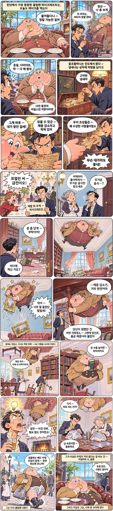
#085 · 2026-11-28
루드비 홀베르크 「니클라이 클림의 지하 여행」(Nicolai Klimii Iter Subterraneum, 1741)
1664년 베르겐 — 뒷산 동굴은, 따뜻한 숨을 쉬고 있었다. 로프가 — 끊겼다아아! …어라? 떨어지지가, 않잖아. 지구 내부에 금빛 내부 태양이 뜬 세계 나자르 — 사자한테 — 독수리가 붙었어! 나무야! 살려줘! 방금, 나한테 소리 지었나? 나무가 — 말을 한다!? 걸어다니는 나무 민족의 낙원 포투 — 서기 댁 부인에게 — 뛰어오른 죄! 그쪽이 나무로 보였다니까요! 지구인은 참, 빠르구나. 포투에서는 — 느리게 이해하는 이가 현자다. 긴 다리가 — 드디어 취직했다! 두 달을 걸어 — 나자르를 한 바퀴. 원로 자리에서 — 여자들을 물러나게 합시다. …뭐라고 하셨죠? 안쪽 지평으로 — 가라. 낙원은, 그를 내보냈다. 사람을 닮은 쿠아마 — 그들의 황제가 된 지구인. 짐은 — 황제다! 포고령이 — 예순 번째입니다. 이번엔 정말 끝났… 어?! 여긴 어디죠 — 예루 피칼 살림? 방랑하는 유대인이다! 떠난 지 — 열두 해가 지나 있었다. '포투'는 — '유토피아'를, 거꾸로 쓴 이름. 덴마크-노르웨이의 문호 홀베르크가 1741년 라틴어로 발표한 지하 세계 SF의 고전
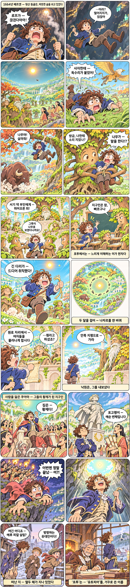
#084 · 2026-11-28
알렉세이 N. 톨스토이 「아엘리타 — 화성의 몰락」(Аэлита, 1923)
1921년 겨울, 내전이 진 페트로그라드 외곽 폐차고 옆 빈터 — 목재 거더에 매달린 알루미늄 탄환형 우주선이 고개를 들고 기체에 산호색 아침 해가 반사된다. 이륙 십오 분 전 — 탑승자는, 두 명뿐이오. 싸울 곳이 지구엔 남지 않았거든, 웃는 구세프. 저 붉은 별이 — 부르는 것뿐이오, 도면을 접는 로스. 로스가 지구에 남긴 것은, 빈 액자 하나뿐. 눈보라를 뚫고 수직으로 솟구치는 은빛 기체의 청록 빛 방사광 — 지구야, 잘 있거라! 일곱 달의 어둠 뒤 — 창밖에, 붉은 별. 산호빛 사막과 두 개의 위성 아래 폐허의 이집트풍 석상들. 이 도시는 — 숨을 죽이고 있군. 아니, 살아 있소 — 저기, 연기. 문명은 땅 밑에서 — 산소를 아껴 쓰며, 살아 있었다. 청동 기둥 뒤, 커다란 어두운 눈이 두 지구인을 좇는다 — 저것이… 지구에서 온 손님. 발코니의 저녁 — 지구에는 바다가 있소, 푸르고 끝이 없는. 당신의 별은 — 책보다 아름다워요. 그러나 배급탑 앞 무표정한 회색 노동자들 — 아이를 뺏고, 생각을 뺏는다니 — 이건 짐승 우리야. 지구의… 자유란, 무엇이오. 속삭임이 밤을 건너 퍼지고 횃불이 물결이 되던 그날 밤 — 화성이, 뒤집혔다. 진압의 불길 속 계단을 뛰어 오르는 두 사람 — 아엘리타, 뛰어요! 둥근 승강구 앞 이별 — 가세요, 당신의 별로. 당신 없는 별 따위 —. 나는 화성이에요 — 화성과 함께, 남겠어요. 닫히는 문틈에서 떨어지려는 두 손. 여덟 달 뒤 — 눈 내리는 페트로그라드에 내려앉은 우주선 — 누가 믿겠냐만, 난 또 싸울 곳이 생겼군. 밤의 다락방, 벽엔 여전히 빈 액자, 새벽의 무전기 다이얼 — 다 잡음뿐… 별들뿐이야. 그리고 새벽에 — 부호가, 울리기 시작했다. 아엘리타…! 혁명 뒤 소련에서 태어난 화성 로맨스의 효시 — 이듬해 프로타자노프 감독의 무성영화로 옮겨져 초기 SF 영화의 고전이 된, 알렉세이 톨스토이의 1923년작
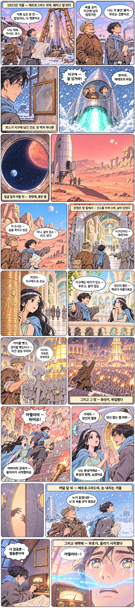
#083 · 2026-11-28
리처드 애덤스 록 「달 기만 사건」(The Great Moon Hoax, 1835)
1835년 8월 25일 새벽, 뉴욕 1페니짜리 신문 선의 인쇄기가 돈다 — 에든버러에서 부록이 도착했어, 과학저널. 뉴스보이의 외침이 거리를 쓸고 간다 — 특보! 달에 생명이 산다! 희망봉의 새 원리 거대 망원경이 달을 겨누자 렌즈 속에 계곡과 숲과 물이 보이고, 이마에 가죽 덮개를 세운 갈색 들소 무리가 초록 비탈을 내려온다. 골짜기마다 단뿔 산양, 꼬리 없는 두 발 비버(굴뚝에서는 연기가 — 저들은 불을 쓰고 있어), 주인도 목자도 없는 지구의 양 떼. 여섯 낮 동안 뉴욕은 달로 살았다 — 그리고, 날개 달린 사람: 키는 우리 절반, 얼굴은 원숭이보다 똑똑해 보여. 연못에서 목욕하며 박막 날개를 털고 과일을 나누는 황동빛 박쥐인간들 — 한 마리가 물에서 고개를 들어 이쪽을 빤히 들여다보고 있군. 하루 만 구천삼백육십 부, 세계 최다 판매 게시판 앞에서 예일의 교수들이 고개를 끄덕인다 — 허셜의 관측이라면 믿을 수밖에 없군. 그러나 새벽 편집실에서 록의 깃펜이 미소 짓는다 — 에든버러 과학저널은… 삼 년 전에 폐간됐는데. 눈부신 발견은 잉크에서 — 렌즈에 해가 들어 관측소가 불타 관측은 끝나고, 다음 날 인쇄기는 다시 돈다. 창밖 달 위를 박쥐 실루엣 하나가 지나간다. 신문 한 장이 만든 달과 세계 최초의 대규모 페이크뉴스 — 1페니로 살 수 있었던 최고의 과학
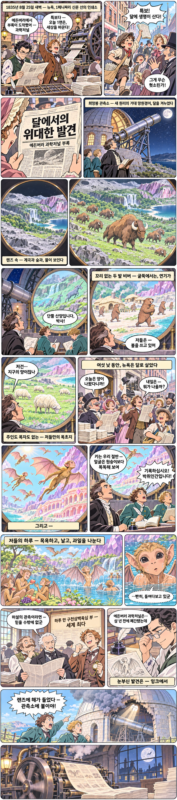
#082 · 2026-11-27
잭 런던 「주홍색 역병」(The Scarlet Plague, 1912)
2073년 여름, 샌프란시스코의 옛 해변 — 소년들이 모래에서 파낸 해골의 이빨을 뽑아 목걸이를 만들고, 에드윈의 가죽주머니엔 백 년 묵은 금화 한 닢. 백발의 그랜서가 증손자들에게 이야기를 시작한다 — 주홍병은 2013년에 왔다. 모래알 하나가 사람 하나, 그 해변에 모래만큼 사람이 살았다는 세상. 버클리 강의실에서 콜브란 양의 얼굴이 산호빛으로 물들고 — 발이… 발에 감각이 없어요. 십오 분 만에 죽는 병, 전화는 대화 중간에 죽고 도시는 산호색 불기둥으로 타올랐다. 이튬날 형의 얼굴은 이미 주홍 — 거울을 봐라. 가까이 오지 마라. 화학관의 사백 명은 우물을 팠지만 병은 안에 있었고, 눈물의 간호 아가씨를 내보낸 뒤 마흔일곱 명이 핏빛 해 아래 도시를 나선다 — 저택 계단에 앉은 노교수는 어머니에게는 알리지 마시오 손을 흔들고, 마지막 비행선은 낚싯추처럼 떨어졌다. 아침에 — 나는, 혼자였다. 예순 해 뒤, 그랜서는 텔레그래프 힐의 마른 동굴을 가리킨다 — 옛 책들과 알파벳의 열쇠를 숨겨 두었다고. 후후는 무당이 되겠다 웃고 헤어립은 코웃음 치지만 에드윈은 속삭인다 — 할아버지는 바보가 아니야, 언젠가 내가 이 무리 전부를 다스린다. 모든 것은 지나간다 — 우주의 힘과 물질만이 남아, 중얼거리는 노인 곁, 저녁 해변에 야생마 떼가 내려온다 — 산사자가 많아져 내려온 짐승들. 노인과 소년은 염소 떼를 따라 숲으로 들어간다 — 죽음이 파묻힌 해변이, 살아 돌아온 바다가 되어. 1912년에 오늘날의 종말을 그린 잭 런던의 종말 후 세계 고전
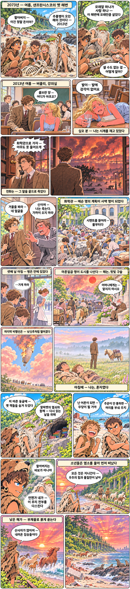
#081 · 2026-11-27
D.H. 린지 「아르크투루스 항해기」(A Voyage to Arcturus, 1920)
1920년 3월, 햄스테드의 강령회 — 안개가 사람으로 응고되어 소파에 눕고, 폴이 그 하얀 손을 붙든다 — 만질 수 있군, 진짜 손이다. 그때 문이 부서지고 크라그가 뛰어든다 — 유령은 안개로 풀리고, 입가의 수수께끼 미소는 짐승 같은 씩 웃음으로 일그러진다 — 이 씩 웃음이, 크리스털맨의 표정이다. 조그만 강철 렌즈 속 노란 해와 파란 해가 나란히 빛난다 — 아르크투루스의 이중성, 곁의 작은 반짝임이 행성 토만스. 빛이 백 년 걸리는 길을, 절벽 탑의 수정 어뢰는 밤에 떠난다. 붉은 사막에서 깨어난 마스컬 — 이마에 자두만 한 살 혹 브레베, 목의 혹, 가슴에서 뻗은 부드러운 촉수. 조인윈이 젖빛 진주빛 피를 나누고 아픔을 둘로 나누자 온 세상이 노래한다 — 모래는 웅성거리고, 햇살은 하프 소리를 낸다. 산 너머 푸른 빛은 둘째 해 알파인 — 그 밤이 오기 전에, 집으로. 서트르의 바다에서 섬은 구름을 타고 흐르고, 위아래 없는 검은 절벽 한가운데 크라그의 망치가 핏빛 얼룩을 내리친다 — 네 심장을 두드리고 있다, 마스컬. 너 자신이 — 나이트스포어다. 무스펠의 돌탑, 여섯째 창까지의 계단은 피로 이어졌다 — 하늘을 채운 거대한 발광 구 너머, 먼 빛의 직사각형 문. 뗏목은 순수한 어둠으로 출항한다 — 크라그, 당신이 서트르인가? 그렇다. 지구에서 내 이름은 — 고통. C.S. 루이스가 '완전히 새로운 세계'라 부르고 톨킨이 애독한, 환상 SF의 성전이라 불리는 린지의 1920년 걸작
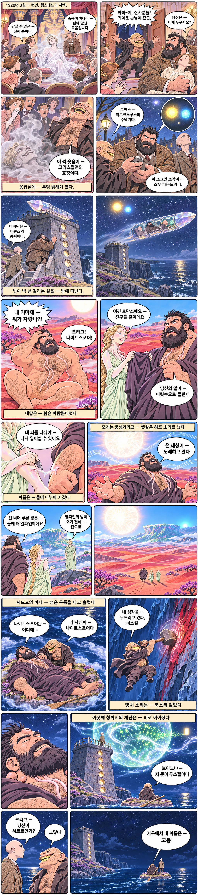
#080 · 2026-11-27
H.G. 웰스 「새로운 가속제」(The New Accelerator, 1901)
마흔쯤의 생리학자 기버니가 샌드게이트 언덕에서 팔을 붙들고 소리친다 — 됐다! 천 배, 수천 배로 간다고! 신경을 깨우려던 약이 시간을 늘인 것이다. 물에 탄 한 잔을 마신 두 신사 앞에서 커튼이 펄럭이던 모양 그대로 얼어 붙고, 놓아 버린 유리잔이 허공에 걸린다 — 잔은 지금도 초속 5미터로 떨어지고 있다, 우리가 빨라서 느리게 보일 뿐. 창을 넘어 나가니 산책로는 박제된 낮 — 달팽이 속도로 내려가는 벌, 뺨을 부풀린 채 정지한 취주악대, 보랏빛 얼굴로 신문을 접던 신사, 목욕 의자와 파라솔의 군상. 유성처럼 달리는 두 사람의 옷에서 김이 피어오르고(공기의 마찰), 매일 짖던 랩독이 하늘로 던져져 부인의 파라솔을 뚫는다 — 커튼이 걷히듯 세상이 한꺼번에 돌아왔다. 아무도 모른다, 목욕 의자의 노신사만 의심스레 우리를 볼 뿐. 반 시간을 살았지만 악대는 겨우 두 마디. 이 이야기 자체도 가속제 덕에 6시 25분에 시작해 31분에 끝났다. 그리고 기버니는 다음 약을 준비한다 — 몇 초를 몇 시간으로 늘여 지루함을 조용히 흘려보내는 『감속제』를. 그리고 그 결과는 — 지켜보기로, 했다
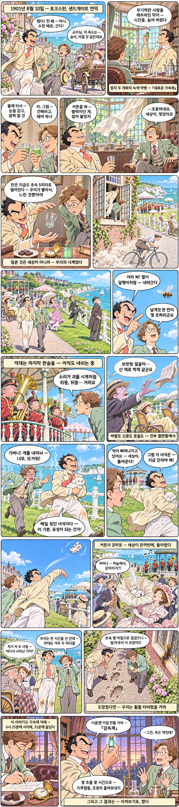
#079 · 2026-11-27
J.-H. 로스니 에넌 「지구의 죽음」(La Mort de la Terre, 1910)
수백만 년 뒤의 지구 — 바다는 사라지고, 구름은 잊혔다. 화강암 사막에 남은 고수원 오아시스, 감시인 타르는 유황 꽃받침 통신기 그랑 플라네타레 곁에서 북풍이 그치기를 기다린다. 새는 이 행성 마지막 짐승 — 사람의 말을 배웠다. 들것에 실려 온 처녀의 뺨에는 붉은 점 — 사람이 만든 철에서 태어난 새 생명 철자성체가 목숨을 빨아 마셨다. 원거리 통화가 전하는 대지진, 붉은 대지 오아시스의 전멸 — 아홉 대의 글라이더가 사막을 건너고, 잔해 속에서 타르는 빛의 머리칼 에레를 구해 낸다. 법은 추방자의 혼인을 금한다 — 그럼 물을, 땅 밑에서 찾는다. 좁은 균열, 수정의 동굴, 막힌 벽 — 돌이, 열린다! 지구의 심장에는 아직 물이 살아 있었다. 타르는 물을 에레의 손에 맡기고 대가로 에레를 청한다. 그러나 다른 오아시스들은 스스로 잠들고, 물은 다시 배반한다 — 자라난 새 주인들, 꺼져 내려앉은 가족 구역, 에레—! 아이들—! 죽음을 왜 두려워했을까 속삭이며 동생 아르바가 이리듐 관을 입술에 대고 — 그리고 땅 위에는, 인간이 한 사람. 마지막 인간은 안락사를 거절하고 철자성체들 사이에 누웠다 — 마지막 인간의 생명이, 새 생명으로. 인류가 산업으로 다룬 철에서 태어난 새 생명이 지구를 물려받는 대체 생명 SF의 고전 — SF 역사상 최초의 퍼스트 콘택트 「크시페우지」(#045)의 작가 로스니 에넌이 1910년에 그린 지구의 종말과 인계
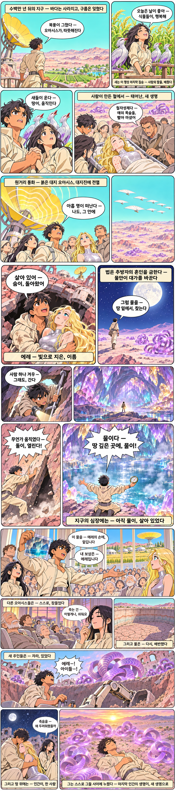
#078 · 2026-11-27
기 드 모파상 「호를라」(Le Horla, 1887)
세느 강 앞 잔디에서 일기를 적던 신사가 하얀 브라질 삼돛배에 모자를 들었다 — 배에는 보이지 않는 손님이 타고 있었다. 밤마다 가슴을 짓누르고 목숨을 빨아 마시는 것, 아마포로 묶어 둔 물병에서만 물과 우유가 사라지는 것, 대낮 허공에 떠 있던 장미 한 송이 — 의지를 지배당해 마부 앞에서 '집으로'를 외치고, 거울에는 자신이 비치지 않았다. 쇠창과 자물쇠로 가두고 기름을 붓는 밤, 다락의 하녀 부부와 함께 타오른 하얀 저택, 일기의 마지막 줄 — 그는 죽지 않았으니, 나 자신을 죽일 수밖에. 인류의 뒤를 이어 온 새로운 주인을 그린 모파상의 일기체 단편, 환각인가 침입인가를 독자가 판단하게 남긴 우주적 공포의 고전 (1887)
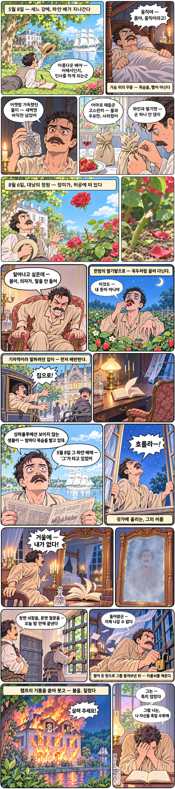
#077 · 2026-11-27
에드거 라이스 버로스 「지구의 심장부」(At the Earth's Core, 1914)
땅 밑 사백 마일 — 쇠 두더지는, 아직도 뚫고 있다. 깊이계가 미쳤어 — 오백 마일을 넘었다! 후진 장치가 나갔습니다 — 이제 길은 앞뿐이에요. 그리고 — 암반 너머에서, 빛이. 하늘이 사방으로 굽어 올라간다 — 해는 하늘 한가운데, 한 치도 움직이지 않는다. 우리는 — 지구의 '안쪽'에 서 있다! 별도 밤도 없다 — 여기엔 시간을 잰 사람이 없을 거야. 코끼리가 하늘 아래에서 — 한가로이 풀을 뜯고 있군. 풀밭의 나침반은 제자리를 잃고 돈다. 숲의 부족이 묻는다 — 너희는 하늘에서 떨어졌나, 아니면 땅에서 났나. 땅 밑을 뚫고 — 올라왔소. 엎드려! 하늘의 주인 — 마하르다. 저것이… 사람을 부리는 주인이야. 종일 걸어도 — 해는 한 뼘도 움직이지 않는다. 마하르의 도시 — 절벽 위의 주인들. 마하르는 알을 낳고 — 사람은 그 알을 지킨다. 이 알은 — 다음 세대 주인의 것이다. 주인들이 — 하늘로 흩어진다! 다이언! 처녀는 — 교활한 후자의 것이다. 교수님은 이 이야기를 — 위 세상에 전하세요. 다이언을 찾을 때까지 — 여기가 내 땅입니다. 쇠 두더지는 원고 꾸러미를 싣고 거꾸로 사백 마일을 파고 오르고, 데이비드는 해가 지지 않는 나라에 홀로 남는다 — 타르잔의 작가가 1914년에 그린 지구 '안쪽'의 세계, 펠루시다르
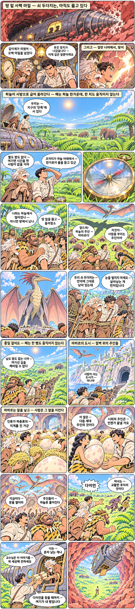
#076 · 2026-11-27
알렉산드르 보그다노프 「붉은 별」(Красная звезда, 1908)
혁명이 진 뒤의 눈보라, 페테르부르크에서 사라진 기술자 레오니드 — 은빛 비행선 에테로네프의 둥근 창 너머 지구가 발밑에서 멀어지고, 멘니가 가리킨 붉은 별이 커진다. 저것이 우리의 별입니다. 하늘에 달이 두 개 뜬 도시 — 돈도 감옥도 주림도 없는 나라, 노동이 잔치인 거리. 잿빛 중산모를 벗자 은빛 머리가 흘러내린다 — 멘니는 지구를 위한 가면, 여기서는 네티입니다. 지구가 가슴에 남긴 병을 화성의 피가 씻어 간다 — 우리는 피를 나눕니다, 젊음과 기억을. 그러나 대의회의 돔에는 그늘이 진다 — 우리는 늙어 갑니다, 아이들이 줄고 대기가 엷어져 갑니다. 슈테르니의 손가락이 하늘을 찌른다 — 지구에는 피가 있습니다, 수십억의. 그들의 피를 우리의 젊음으로 — 그러나 든 손은 드문드문, 고개 떨군 객석과 홀로 남은 연단. 열 속에서 자라난 말은 은색 바늘을 든 네티를 위협으로 바꾸고 — 그리고, 새벽이 밝았다. 서른 날을 잠들어 있었다는 정신병동의 의사 — 당신이 죽인 것은, 아무도 없소. 그럼 화성은 전부 꿈이었습니까 — 격자 창 너머 저녁 하늘에, 여전히 붉은 별 하나. 이 소설을 쓴 보그다노프는 20년 뒤 세계 최초의 수혈 연구소를 열고, 소설 속에서 사랑하던 혈액 교환 실험 도중 세상을 떠난다 — 레닌의 논쟁 상대이자 소비에트 SF의 아버지가 1908년에 그린, 낙원과 의심의 편지
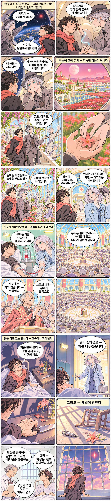
#075 · 2026-11-27
쿠르트 라스비츠 「우주 도서관」(Die Universalbibliothek, 1904)
휴가 중인 부르켈 편집인은 맥주 잔을 들고도 원고를 얻어 가러 왔다 — 발하우젠 교수는 탁자의 백지를 당기며 답한다, 앞으로 나올 모든 책의 수를 지금 계산해 주지. 한 권에 백만 글자, 글자는 백 가지면 충분하니 — 그 모든 조합을 꽂으면 우주 도서관이 된다, 지금까지 쓰인 것과 앞으로 쓰일 것 전부. 괴테도 성서도 잃어버린 플라톤도, 수잔네가 학교에서 쓴 편지도 앞으로 나올 신문까지. 그러나 첫 권은 온통 백지, 둘째 권은 맨 끝에 잉크 점 하나 — 제목을 믿은 책은 아래쪽에서 글자가 소용돌이쳐 흩어지고, 참과 거짓이 같은 꽂이에 서 있다. 세상의 모든 중상과 거짓말도 전부 그 안에. 권수는 유한하다 — 하나 뒤에 영이 이백만 개. 천 권을 한 상자에 담아도 눈에 보이는 우주가 그만큼 모자라. 사람은 신을 재어서는 안 되지요 — 그 안을 뒤지지 말고 우리 손으로 쓰며 만들어야. 우연은 놀이, 이성은 창조 — 오늘 논 것을 내일 적는다. 그리고 수잔네는 세 잔을 다시 따른다, 아직 새하얀 백지와 연필 옆에서. 보르헤스 「바벨의 도서관」이 물려받은 원형이 된, 독일 SF의 아버지 쿠르트 라스비츠의 단편 (1904)
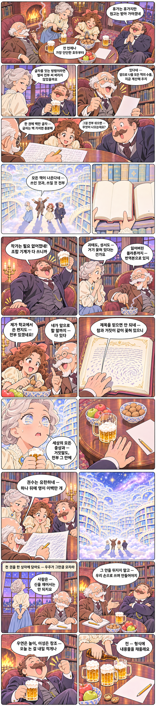
#074 · 2026-11-27
쥘 베른 「옥스 박사의 실험」(Une fantaisie du docteur Ox, 1872)
기요통돈에서는 — 개도 물지 않고, 고양이도 할퀴지 않는다. 종소리의 파문이 공기 중에 느리게 번지는 잠든 마을에 옥스 박사가 나타나 돈 한 푼 없이 마을을 환히 밝여 드리겠다 했다. 언덕 위 세워진 가스 공장 — 물을 쪼개어 산소와 수소를, 각각의 파이프로. 아무도 모르는 사이 보이지 않는 기체가 마을로 스몄다. 세상은 점점 빨라진다 — 참나, 세상이 왜 이렇게 빨라진 거야! 십 년째 안건을 두고 으르렁대는 두 노인, 십 년을 말 한마디 없던 프란츠는 오늘, 당장 결혼하자고 외치고, 오페라 객석은 박수 대신 주먹을 흔들고, 시민들은 일천백구십오년 비르가멘의 소가 풀을 먹은 칠백 년 원수를 갚으러 깃발과 트럼펫, 늙은 대포를 앞세워 새벽 물안개 속 행군한다. 그때 — 산소와 수소가 만났다. 하늘로 치솟은 연기 기둥과 함께 종은 저절로 마구 울리고 모자들이 날아가고, 눈을 뜬 마을은 서로 묻는다 — 우리, 어디로 가는 길이었지? 옥스 박사와 조수 이젠은 흔적 하나 없이 사라졌다 — 옥스와 이젠을 합치면, 옥시젠·산소가 되는군. 기요통돈의 종은 — 오늘도, 아주 천천히 울린다. 마을 전체를 상대로 벌인 쥘 베른의 속도 환상 (1872)
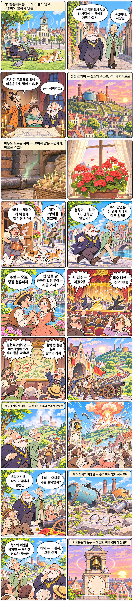
#073 · 2026-11-26
매리 셸리 「죽지 못하는 자」(The Mortal Immortal, 1833)
매일 네 잔씩 — 천국의 물이라더니. 노마법사 코르넬리우스에게 속아 마신 잔 속의 물은 불멸의 묘약이었다. 봄 초원의 위니와 베르타는 맺는다 — 영원히 곁에 있겠다고. 십수 년 뒤 물그릇에 비친 첫 주름, 육십 년이 지나도 스물서넷의 얼굴 — 시장의 수군거림은 악마와 계약한 거야로 변하고, 아는 얼굴들은 관이 되어 하나씩 지나간다. 이젠 나를 손녀라 부르겠구나 웃는 백 살의 베르타에게 젊은 남편은 답한다 — 내 아내야, 오늘도 그래. 아궁이 불빛 아래 마주 잡힌 주름진 손과 젊은 손, 속닥이는 물음 — 내가 떠나면, 혼자 남아 무섭지 않니. 삼백 년 뒤 폐허가 된 탑의 달빛 속, 먼지 사이 별처럼 빛나는 수정 플라스크를 다시 마주한 위니는 깨닫는다 — 코르넬리우스는 성공했던 거야, 이건 축복이 아니라 저주였다고. 길지 않은 밤이 지나 빈 의자와 꺼진 촛불만 남고, 강가에 홀로 걷는 스물서넷의 그 얼굴. 달빛 아래 여전히 빛나는 플라스크 — 나는, 죽지 못하는 자. 프랑켄슈타인의 작가가 남긴 불멸의 저주 단편 (1833)
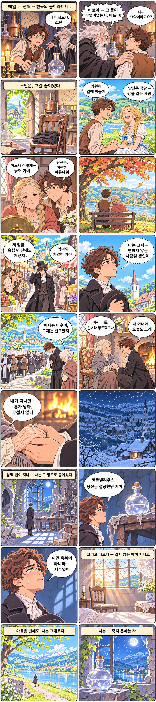
#072 · 2026-11-26
E.V. 오들 「시계태엽 사나이」(The Clockwork Man, 1923)
그날 오후, 하늘에서 사나이가 내려오고 있었다 — 두 팔을 풍차 날개처럼 돌리며 지그재그로 내려왔다. 아주 붉은 가발 위 갈색 중산모, 뒤통수엔 은색 원반이 박혀 돌아간다. 그레이트 와이머링 크리켓 그라운드에 내려앉은 방문자 — 눈은 소켓 안에서 가만히 앞만 보고, 벌레 날개처럼 펄럭이는 귀 — 월라발루… 웜, 웜 — 나인 앤 나인펜스. 사나이가 말한다, 저건 나를 조종하는 시계라고 — 지금, 고장 났다고. 수리하다 서툰 기계공의 실수로 팔천 년을 미끄러져 왔다고. 한 명 모자라던 팀의 타자석에 선 그는 배트를 판돌이처럼 돌려 흰 플란넬 선수들을 나인핀처럼 쓰러뜨리고, 울타리는 점프가 아니라 부유로 넘어 지평선 너머로 사라진다. 전기 구두야… 틀림없이 전기 구두일 거야 외치는 앨링엄과 달리, 해 질 녘 돌담 스타일에서 사나이는 연인을 안은 아서를 바라보다 뭉개진 붉은 얼굴로 눈물을 나란히 흘린다 — 우리에겐 아이도 사랑도 없소, 영원히 무한 속을 돌기만 하지. 아지랑이처럼 흐려지며 속삭인다, 웃으시오 — 참, 즐거운 작은 세계라고. 그리고, 정적. 최초의 사이보그 소설로 꼽히는 오들의 1923년 고전
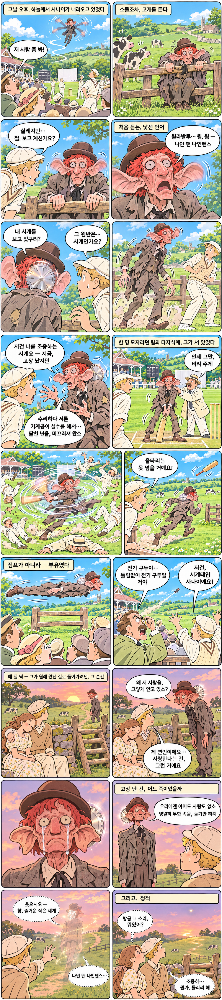
#071 · 2026-11-26
H.G. 웰스 「기적을 부릴 수 있는 사나이」(The Man Who Could Work Miracles, 1898)
기적은 일어나지 않는다 — 이머링 선술집에서 그렇게 외치던 순간, 천장의 석유 램프가 거꾸로 떠올라 불꽃을 아래로 한 채 타고 있었다. 왜소한 사무원 포더링게이에게 입에서 나오는 대로 이루어지는 힘이 붙었다 — 지팡이에 만개하는 진홍 장미, 허공에 떨어지는 성냥 한 개, 옷은 의자에 둔 채 몸만 침대에. 성난 외침 한마디가 순경을 골목에서 지워 버린 뒤, 목사 메이딕의 긴 팔이 활짝 펼쳐진다 — 이 힘으로, 세상을 고치자! 밤새 술꾼은 개과천선하고 맥주는 물이 되고, 만월 아래 행진은 더 높이 오른다 — 여호수아처럼, 저 달을 멈추게. 지구야 멈춰라! 지평선이 통째로 뒤흔들리고 시계탑과 지붕과 소와 사람이 하늘로 떠밀린다. 전부 — 없었던 일으로. 그리고 램프는, 조용히 타고 있었다. 팔짱 낀 빔미쉬는 말한다, 그렇게 말할 뿐이지. 웰스가 1898년에 쓴 판툼 산문 기적 희극
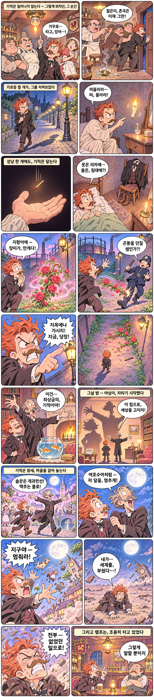
#070 · 2026-11-26
리처드 제프리스 「런던 이후」(After London; or, Wild England, 1885)
문명이 사라진 뒤 잉글랜드 한가운데 생긴 가장 아름다운 호수 — 펠릭스 아퀼라는 직접 파 만든 검은 포플러 카누로 아무도 가지 않는 동쪽 끝을 향해 노를 저었다. 둥지에 알을 남긴 채 새들이 서쪽으로만 흐르고, 하늘이 비고 물은 노랗게, 검게 변했다. 검게 탄 땅 위 하얀 해골 선, 소금처럼 무너지는 벽돌, 뒤에서 빛나는 발자국, 잉크처럼 검은 동전 — 죽은 도시가 발밑에 잠들어 있었다, 런던이. 불타지만 태우지 않는 유령의 불꽃 속을 지나 새벽의 맑은 물로 돌아온 카누, 손에는 검은 동전. 문명 붕괴 이후 소설의 효시가 된 제프리스의 1885년 고전
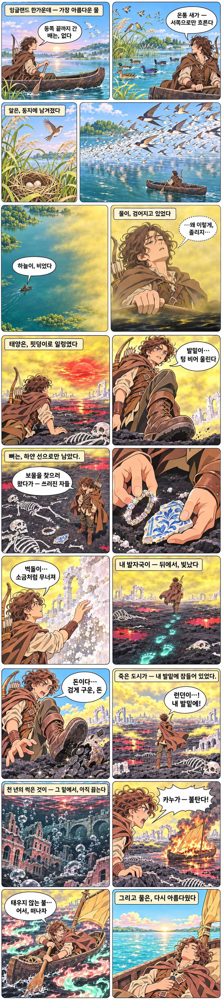
#069 · 2026-11-26
에드워드 페이지 미첼 「몸 없는 사나이」(The Man Without a Body, 1877)
1877년 뉴욕 중앙공원 박물관, 박제새 사이 유리 진열장 속 머리가 윙크한다 — 뒴코프 교수는 소리를 전선으로 보냈다면 물질도 간다고 믿은 사람이다. 보스턴 다락방의 전선 5마일과 축전지 200컵 — 첫 성공은 3센트 우표, 다음은 곤두선 털 그대로 재조립된 고양이 토머스. 스스로 송신기에 오른 교수는 고양이도 간다, 사람도 런던까지! 외쳤지만 재조립은 목의 세 번째 뼈에서 멎었다 — 축전지에 새 황산을 채우지 않은 탓에. 의대생 항아리를 떠돌아 파리의 살인범으로 둔갑한 머리가 진열장에서 청한다, 지금 내게 필요한 건 산책일세. 그날 밤 박물관의 모아 골격이 다시 조립되고, 달빛 호숫가에는 두 개의 긴 그림자 — 그날 밤, 새들은 창밖 발소리를 들었다. 물질 전송 SF의 효시가 된 미첼의 1877년 단편
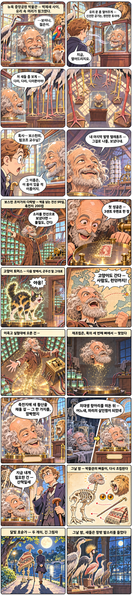
#068 · 2026-11-25
M.P. 실 「보라색 구름」(The Purple Cloud, 1901)
죽은 백만장자가 극점의 첫 깃발에 걸어 둔 수백만 달러 — 선원 아담 제프슨은 얼음 바다의 소용돌이와 알 수 없는 글자가 빛나는 검은 바위를 지나, 복숭아 향이 밴 눈보라 한가운데 상처 하나 없이 잠든 바다표범과 갈매기를 만난다. 하늘을 덮은 보라색 구름이 지나간 뒤 세계의 모든 숨은 멎어 있었고, 텅 빈 런던에서 시인의 가죽 노트를 주워 든 아담은 스스로를 세계의 황제라 부르며 도시에 불을 지르고, 에게해 임브로스 섬에 17년을 쌓은 황금 궁전 계단에 홀로 앉는다. 그러다 불타는 콘스탄티노플의 지하 계단에서 살아 남은 처녀 레다를 데려와 세상을 가르치고 — 다시 번지는 보라 안개 앞, 두 사람은 서로를 끌어안는다. 3주째 맑은 하늘, 아침의 복숭아 향. 마지막 인류(last man)물의 원조가 된 1901년의 파멸과 사랑
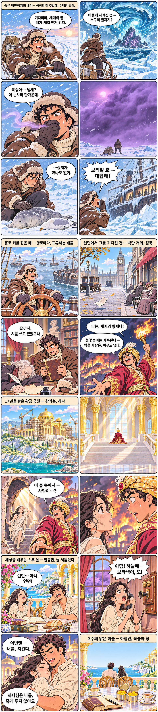
#067 · 2026-11-25
아서 코난 도일 「지구가 소리쳤을 때」(When the World Screamed, 1928)
1928년 런던, 시추 엔지니어 존스가 불려 간 면담 상대는 살아 있는 지구를 믿는 챌린저 교수 — 노인은 성게 하나를 내밀며 말한다, 우리는 겉을 기어다니는 진드기고 지구는 우리를 모른다고. 서식스 구릉에 뚫린 8마일의 구멍, 최하단에서 걷혀진 방수포 아래에는 회색으로 고맥동하는 지구의 살갗이 있었다. 전기 신호 한 번, 강철 창이 신경을 찌르자 — 강철 새장 열네 마리가 하늘로 날고, 끈적한 간헐천이 관중석을 적시고, 지구는 상처를 아래부터 스스로 닫았다. 헤클라가 울고 베수비오가 머리를 날린 그날의 비명은 온 세계가 들었다. 챌린저 교수 시리즈의 마지막 이야기
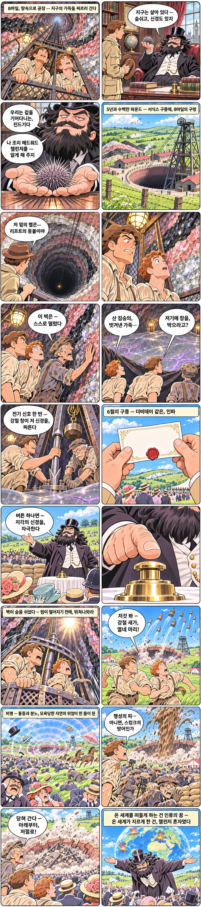
#066 · 2026-11-25
잭 런던 「붉은 것」(The Red One, 1918)
과달카날의 밀림을 가르는 한 시간짜리 소리 — 열병에 야윈 박물학자 바셋은 들것에 실려 그 근원을 찾아가, 웅덩이에 박힌 지름 200피트의 붉은 구체를 만난다. 원주민은 '별에서 태어난 것'이라 불렀고, 손끝이 닿자 살아 움직이는 그 금속은 별들 사이를 건너온 우주의 편지였다. 죽음을 앞둔 바셋은 늙은 주술의 응른과 약속한다 — 마지막에 그 노래를 들려다오, 그러면 내 머리는 네 것이다. 빵나무 그늘의, 느긋한 연기와 붉은 노래. 잭 런던이 1916년 호놀룰루에서 쓰고 2년 뒤 출간한 우주적 경외(cosmic awe)의 고전
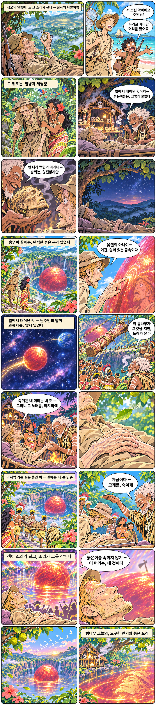
#065 · 2026-11-25
H.G. 웰스 「해방된 세계」(The World Set Free, 1914)
1933년의 다락방에서 젊은 화학자 홀스텐이 원자 속의 불씨를 연다 — 카롤리늄, 한 번 시작되면 열이레를 타오르는 '멎지 않는 폭발'. 1956년, 폭격기 편대가 도시들 위에 그 불을 떨어뜨리고, 살아남은 세계는 브리사고 호수의 섬에 모인다. 영국 왕이 먼저 왕관을 내려놓고, 세르비아 왕의 마지막 폭탄이 회의장을 노리지만 — 국경이 사라진 세계 공화국은 이미 시작되어 있었다. 일흔다섯 평의원 카레닌이 마지막 날에 남긴 말, 앎과 힘에는 절대의 한계가 없다. 20년 뒤 레오 실러드가 이 소설을 읽고 핵 연쇄 반응을 떠올린, 예언이 실제가 된 SF
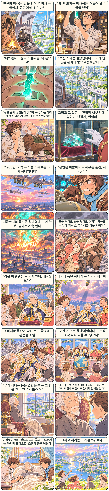
#064 · 2026-11-25
테아 폰 하르보우 「메트로폴리스」(Metropolis, 1925)
위의 탑에 사는 아들 프레더는 노동자 아이들의 눈을 처음 보고 아버지의 도시 밑바닥으로 내려간다 — 팔을 바늘처럼 벌린 십 시간, 사람을 삼키는 기계 몰로크. 카타콤의 처녀 마리아는 "머리와 손 사이엔 심장이 필요하다"고 설교하고, 지배자는 발명가 로트방의 기계 인간에게 마리아의 얼굴을 씌운다. 마리아의 얼굴로 눈을 뜬 기계는 노동자들을 부추겨 심장 기계를 부수고, 노동자 도시는 물바다가 되어 아이들을 삼키려 든다. 화형의 불길 속에서 은빛 골격이 드러난 뒤, 저녁의 성당 계단에 남은 것은 — 아버지와 노동자의 손을 맞잡게 하는, 아들의 두 손. 프리츠 랑의 영화로 이어진 기계 도시의 고전
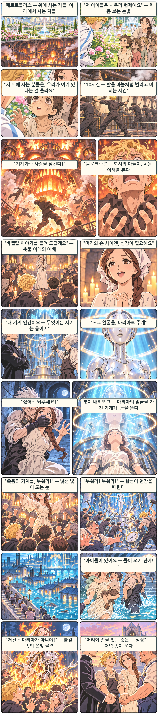
#063 · 2026-11-24
W.E.B. 듀보이스 「혜성」(The Comet, 1920)
새 혜성의 꼬리가 정오에 스친다는 날, 흑인 은행 심부름꾼 짐은 제일 밑바닥 금고로 내려가라는 지시를 받는다 — 위험한 자리엔 제일 값싼 사람이 내려간다. 돌문이 닫히고, 지상의 세계는 조용해진다. 잠들어 버린 뉴욕을 홀로 걷던 짐은 암실에서 사진을 현상하던 줄리아를 만나고, 두 사람은 텅 빈 도시를 함께 헤맨다. 밤의 타워 옥상, 창백한 불꽃 장막 아래에서 "세계는 죽었다"고 속삭이던 두 사람 앞으로 — 클랙슨 소리와 함께 도시의 불이 하나둘 깨어난다. 최초의 아프리카계 미국 SF로 꼽히는 단편
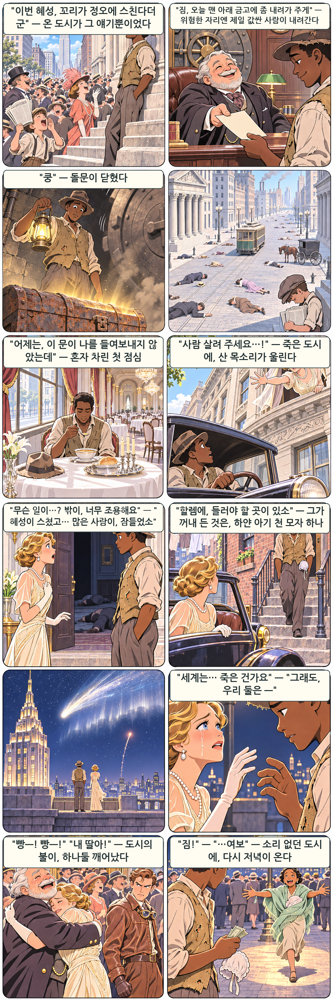
#062 · 2026-11-24
에드워드 에버렛 헤일 「벽돌 달」(The Brick Moon, 1869)
1869년 기숙학교 자습실, 소년들은 항해사를 위한 새 길잡이 별을 벽돌로 만들자 꿈꾼다. 20년 뒤 메인의 겨울 골짜기 — 거대한 물레바퀴가 돌고, 200피트 테라코타 벽돌 구체가 하늘로 튕겨 오른다. 궤도에 오른 달 안에는 우연히 남아 있던 서른일곱 명의 가족들. 지구와 달 사이 어떤 신호도 없던 어느 겨울, 눈밭에 하얀 천을 펼치자 달의 가장자리에 사람들이 줄을 서 — 긴 뜀, 짧은 뜀, 모스 부호의 첫 답장. 인공위성·우주 정거장·위성 통신을 스푸트니크보다 한 세기 앞서 그린 최초의 SF
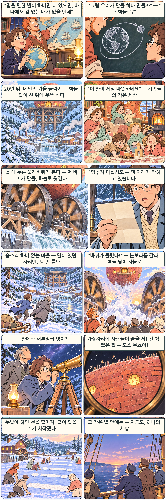
#061 · 2026-11-24
H.P. 러브크래프트 「우주 밖의 색」(The Colour Out of Space, 1927)
1882년 가을 매사추세츠 계곡 농장에 떨어진 운석 — 망치도 통하지 않는 유리 같은 돌은 이튿날 흔적 없이 사라지고, 밭에는 지구에 없는 색만 번진다. 크고 반짝이지만 속은 재뿌이인 곡물, 풀을 뱉고 우물만 바라보는 가축, 우물 속에서 새하얗게 달아나온 아들 — 텅 빈 부엌에서 나홈은 저 색이 온 가족을 마셔 버렸다고 말한다. 새벽 안개의 계곡, 우물에서 하늘 끝까지 솟은 빛기둥 — 색은 마침내 별들의 하늘로 돌아간다
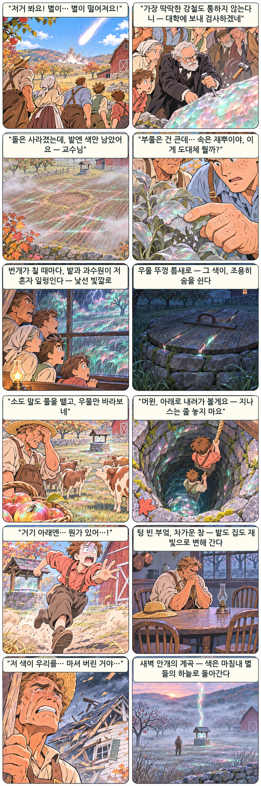
#060 · 2026-11-24
존 제이컵 애스터 「다른 세계 여행」(A Journey in Other Worlds, 1894)
1894년 재벌 애스터가 상상한 서기 2000년 — 반발력 우주선 카리스토호는 온실 지구를 떠나 저택보다 큰 장미가 핀 목성 정글과 은빛 고리의 토성 바다를 지나, 강령 상자가 열린 밤 죽은 이들의 정원을 만난다. 주인공들은 무사히 집으로 돌아왔지만, 이 여행기를 쓴 사람은 18년 뒤 진짜 대서양에서 사라진다
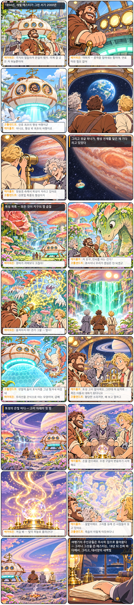
#059 · 2026-11-24
알렉산드르 벨랴예프 「도움 교수의 머리」(Голова профессора Доуэля, 1925)
1925년 여름 아침, 담쟁이 넝쿨 저택 연구소의 취직 조건은 단 하나 — 묻지 않는 것. 커튼 너머 받아쓰기 목소리의 주인은 하늘색 영양액 속에 살아 있는 도웰 교수의 머리였다. 병상의 마지막 당부를 손에 쥔 조수 케른은 논문마다 제 이름을 올리고, 옆 배양조의 늙은 개처럼 머리는 말 없이 지워져 간다. 밤마다 돔 곁에 의자를 붙이는 마리, 서랍 세 번째의 낡은 노트 — 학회 객석 위로 치켜든 진짜 저자의 증거 앞에서 훈장의 빛이 흔들리고. 다음 날 아침 유리 돔 속의 긴 잠, 정원의 빈 의자를 지나가는 바람
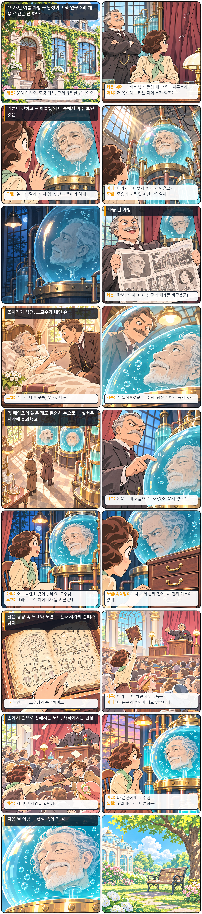
#058 · 2026-11-23
쥘 베른 「정복자 로뷔르」(Robur le Conquérant, 1886)
1886년 필라델피아, 풍선 신사들의 웰던 연구소에 나타난 정체불명의 사나이 — 하늘의 미래는 기계의 것이다. 그날 자정 회장과 비서는 잠옷 차림으로 통째로 하늘에 납치되어, 프로펠러 서른여섯 개의 비행선 알바트로스호 갑판에서 눈을 뜬다. 새벽의 파리, 사하라의 대륙, 태평양의 일출을 지나는 세계 일주 — 밤마다 도끼가 밧줄을 찾고, 나이아가라 상공 자정의 다이너마이트가 마스트를 부순다. 1년 뒤 떠오른 열기구 고 어헤드를 산산조각 내며 돌아온 인사 — 두 번 다시 오지 않겠다던 작별, 구름 저편으로 프로펠러 소리만이
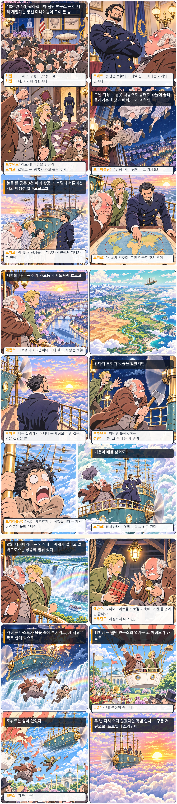
#057 · 2026-11-23
헨리 라이더 해거드 「그녀」(She: A History of Adventure, 1887)
1885년 케임브리지의 밤, 유언처럼 남겨진 깨진 항아리 조각 — 어깨에 뱀 문양 흉터를 지닌 레오와 학자 홀리, 집사 잡은 폭풍의 아프리카 동해안을 지나 늪 위에 앉은 죽은 도시 코르에 닿는다. 석관 통로 끝의 흰 빛, 이천 년을 산 여왕 아예샤 — 베일 아래의 얼굴은 죽은 연인 킬리크라테스의 환생을 알아보고, 영원을 걸고 불의 기둥을 내민다. 먼저 걸어 들어간 그녀의 몸으로 이천 년의 시간이 한꺼번에 밀려오고 — 새벽 안개 속을 걸어 나오는 두 사람, 손바닥 위의 항아리 조각 하나, 이제는 그녀의 무게
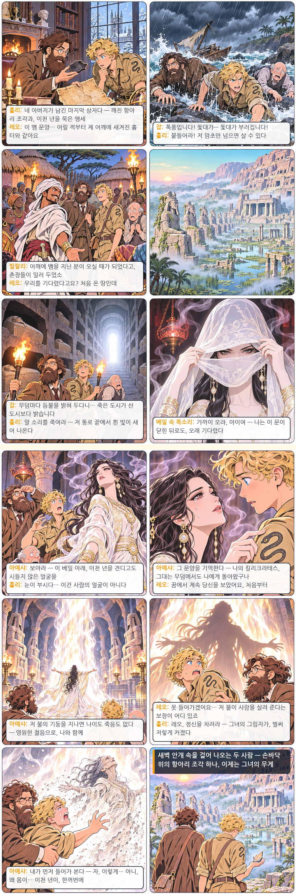
#056 · 2026-11-23
에드워드 불워리턴 「다가오는 종족」(The Coming Race, 1871)
1871년 황혼의 폐광 — 밑바닥에서 새어 올라오던 청록 빛에 이끌려 사다리를 내려가다, 디디개가 부러진다. 떨어진 곳은 태양 없는 궁창 아래 지하 세계 — 등에 새하얀 날개를 단 아이 타에, 은빛 지팡이 하나로 바위를 녹이고 병을 고치는 브릴의 민족. 돈도 문도 감옥도 없는 수정 마을에서 청년은 낯선 낙원을 배우고, 학자 지는 금지된 마음을 안은 채 인공 날개를 채워 그를 지상으로 올려 보낸다 — 새벽 풀밭에 홀로 남은 청년, 땅 밑 어딘가에서 아직 오지 않은 날갯소리
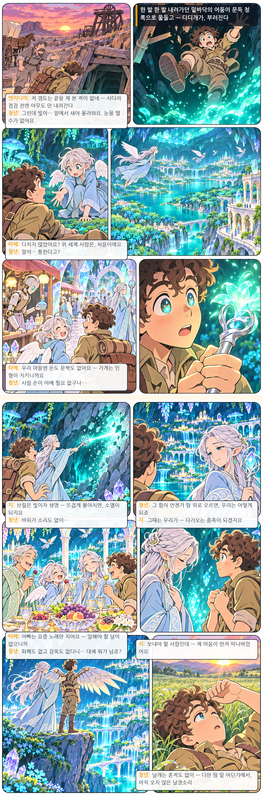
#055 · 2026-11-23
비리에 드 리라다당 「미래의 이브」(L'Ève future, 1886)
1886년 눈 내리는 멘로파크, 은둔한 에디슨의 성채에 절망한 귀족 에월드가 찾아온다 — 사랑하는 여배우 알리샤는 얼굴도 목소리도 완벽한데 속이 텅 비어 있었다. 에디슨의 대답은 간단하다, 그럼 속만 바꾸지요. 알리샤와 똑같은 몸에 가슴 속 축음기 두 대를 박은 인조인간 하달리, '이상(理想)'이라는 이름으로. 대서양의 불꽃 속으로 사라진 이상과, 멀리 런던에서 이유 모를 눈물을 흘리는 진짜 알리샤 — 나의 절반이, 바다에 남아 온 것 같아
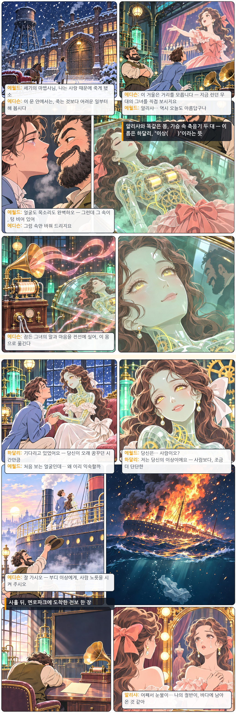
#054 · 2026-11-23
프랜시스 갓윈 「달의 인간」(The Man in the Moone, 1638)
결투로 고향을 등진 스페인 신사 곤살레스가 세인트헬레나 섬에서 길들인 것은 백조 같은 새 가사스 떼 — 나무 틀 엔진에 면 새들이 포화를 피해 오르더니, 12일 만에 달에 닿는다. 노래로 말하는 키 큰 루나인의 낙원, 왕이 건넨 세 개의 돌 — 몸을 깃털처럼 가볍게 하는 돌을 품고 아홉 날을 접어 중국 해안에 내린 아침. 달에서 온 세 돌과, 아직 고향으로 못 돌아간 한 사람
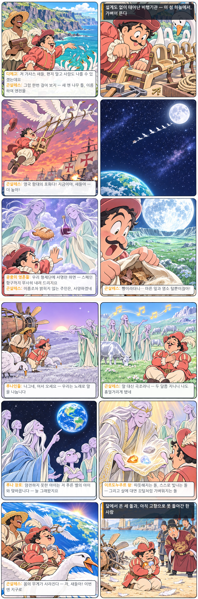
#053 · 2026-11-22
표도르 도스토옙스키 「괴팍한 자의 꿈」(Dream of a Ridiculous Man, 1877)
죽기로 작정한 밤, 골목 소녀의 매달린 손을 뿌리친 채 잠든 어릿광두 — 꿈속 총성 너머에서 깨어난 곳은 상처 하나 없는 지구, 슬픔이 자라난 적 없는 낙원이었다. 장난처럼 가르친 거짓 한 조각이 낙원에 눈물을 심고, 사람들은 다시 별을 향해 걷는다 — 눈을 뜬 아침의 첫마디, 오늘은 태양이 뜨는 날
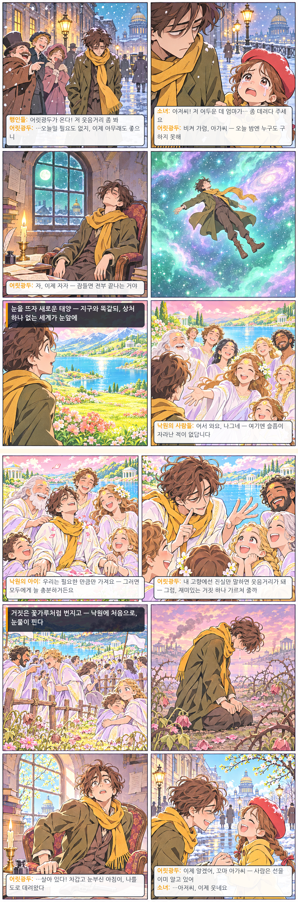
#052 · 2026-11-22
너새니얼 호손 「라파치니의 딸」(Rappaccini's Daughter, 1844)
르네상스 파도바의 밀폐된 정원 — 의사 라파치니가 독초로 가꾼 진보라 관목 곁에서 꽃처럼 자란 딸 베아트리체. 그녀의 숨결에 나비가 떨어지고, 사랑에 젖은 조르바니의 손끝도 어느새 독이 된다. 은빛 해독제를 기꺼이 들이켠 아가씨의 마지막 말 — 두려운 존재가 아니라, 사랑받고 싶었을 뿐. 분수가에는 조용히, 보라 꽃잎 한 점
#051 · 2026-11-22
예브게니 자먀찐 「우리들」(Мы / We, 1924)
머나먼 미래의 유리 도시 온세계주 — 이름 대신 번호, 시간표대로 사는 완전한 나라. 수학자 D-503은 우주선 인테그랄로 수학의 완전함을 별들에게 전하려 하지만, I-330이 이끄는 옛집과 장벽 밖의 풀에서 영혼이라는 병을 얻는다. 상상력은 병이라 선언되고 위대한 수술이 그 병을 잘라 낸다 — 가스 큐브 아래 끝내 침묵한 I-330, 그리고 유리 도시의 밤하늘에는 여전히, 구름 한 점
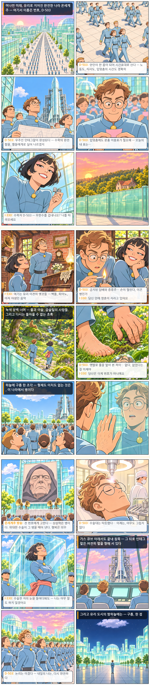
#050 · 2026-11-22
쥘 베른 「혹성 여행 — 헥토르 세르바다크」(Off on a Comet, 1877)
새해 첫날 밤 하늘이 갈라지고, 땅 덩어리 통째로 혜성 갈리아에 실렸다 — 서쪽에서 뜨는 해, 12미터를 가볍게 오르는 아침, 66도에 끓는 물. 은화 마흔 닢으로 잰 하늘의 무게, 동굴집 "니나의 벌집"의 두 겨울, 돛천 풍선 한 장으로 건너온 푸른 지구 — 밤하늘에는 아직, 은빛 꼬리
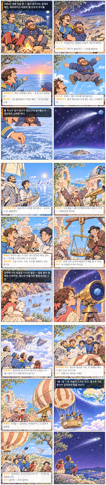
#049 · 2026-11-22
에드워드 벨러미 「루킹 백워드 2000-1887」(Looking Backward: 2000-1887, 1888)
113년을 흙 속에서 잠든 청년이 눈뜬 곳은 2000년의 보스턴 — 유리 지붕 아래 꽃이 흐르는 거리, 하루 네 시간의 노동, 전화로 듣는 오케스트라. 증오하던 시대의 유물에게 내밀어진 두 손 — 잃어버린 약혼녀의 증손녀, 백 년을 건너 돌아온 5월의 약속
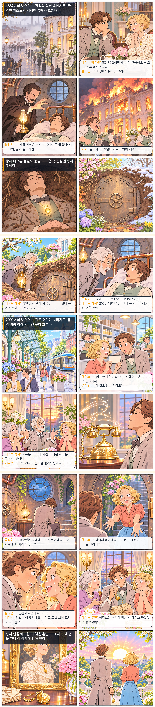
#048 · 2026-11-22
카렐 차페크 「R.U.R.」(Rossum's Universal Robots, 1920)
바다 한가운데 공장 섬에서 '로봇'이 태어난다 — 영혼은 없고 값은 사람의 3분의 1. 십 년 뒤 반란이 인간을 지우고, 살아남은 노인의 실험대 위에서 두 로봇이 처음으로 서로를 지킨다 — 가라, 아담. 가라, 이브
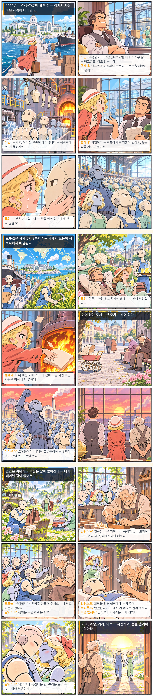
#047 · 2026-11-22
샬럿 퍼킨스 길먼 「허랜드」(Herland, 1915)
안개 협곡 너머 절벽으로 닫힌 고원에 열린, 여자들만의 정원 나라 — 2천 년을 어머니들의 손으로 가꾼 숲과 흰 석조 마을, 모든 아이가 모두의 아이인 허랜드. 지배하려던 터리는 열려 있는 문으로 나가고, 반과 엘라도가 오르는 새벽하늘 — 두 세계를 잇는, 한 쌍의 날개
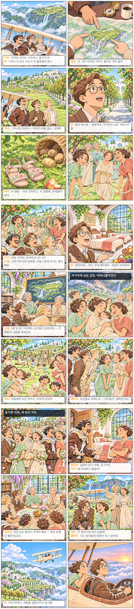
#046 · 2026-11-22
H.G. 웰스 「달에 간 최초의 인간」(The First Men in the Moon, 1901)
중력을 차단한 코버라이트 한 장이 연 길은 켄트의 창고에서 달까지 — 몇 시간 만에 피고 시드는 식물 숲, 하는 일마다 머리를 길러 낸 달의 도시. 망원경 속 깜빡이는 작은 빛은, 케버의 마지막 전언
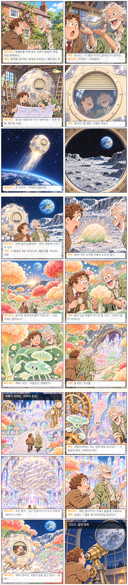
#045 · 2026-11-22
J.-H. 로스니 에넌 「크시페우지」(Les Xipéhuzi, 1887)
SF 역사상 최초의 퍼스트 콘택트 — 5천 년 전 평원에 선 인디고빛 기하 생명체들, 화살도 창도 튕겨내는 몸에는 단 한 곳, 밑동의 별. 짧고 길게 깜빡이던 마지막 빛은 언어였고, 젖은 점토판에 남은 한 줄 — 어쩌면 저들은, 별 사이로 고향을 찾던 이웃
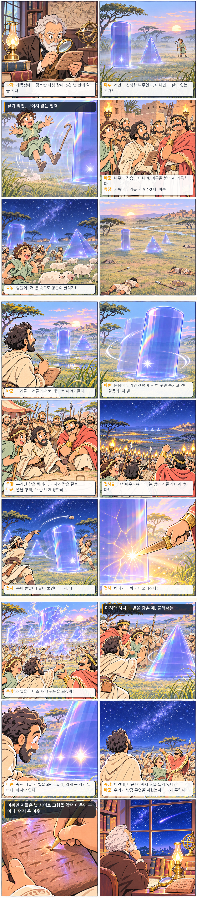
#044 · 2026-11-22
개럿 P. 서비스 「에디슨의 화성 정복」(Edison's Conquest of Mars, 1898)
잔해에서 배운 반중력으로 만국이 함께 지은 첫 우주 함대 — 순금 소행성, 빛의 불꽃놀이 같은 우주 해전, 그리고 아홉 천 년 전 지구에서 끌려온 아이나가 가리킨 극관의 댐. 무지개 물보라 뒤에 맺은 강화의 악수 — 망원경 속, 아직도 붉게 빛나는 점
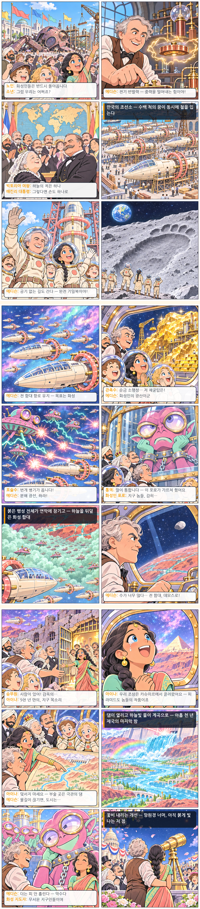
#043 · 2026-11-22
새뮤얼 버틀러 「에레혼」(Erewhon, 1872)
병은 죄고 죄는 병인 나라 — 은행의 이자는 음악, 삼백 년 전엔 기계를 몰아냈다. 새벽 기구가 넘은 눈산 너머, 지도 위에 아직 백지인 산맥
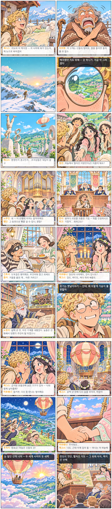
#042 · 2026-11-21
메리 셸리 「마지막 인간」(The Last Man, 1826)
왕도 전쟁도 없는 2092년의 꿈같은 공화국에서 시작된 이름 없는 역병 — 세계가 조용히 비어 간다. 반려견 네비나와 홀로 남은 라이오넬의 새벽 항구, 지평선에는 — 흰 돛 한 장
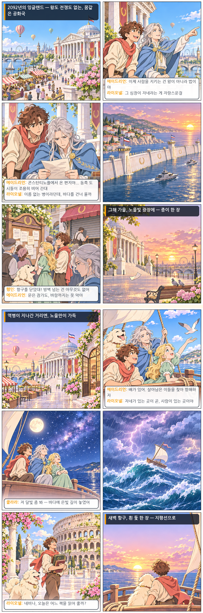
#041 · 2026-11-21
러디어드 키플링 「밤의 항공우편」(With the Night Mail, 1905)
1905년이 그려 본 서기 2000년의 밤하늘 — 구름 바다의 등대 마크 보트, 폭풍 뒤 표류선의 고요한 사별과 살아남은 화부 한 명. 새벽 네 시 사십 분 퀘벡, 우편은 — 어김없이
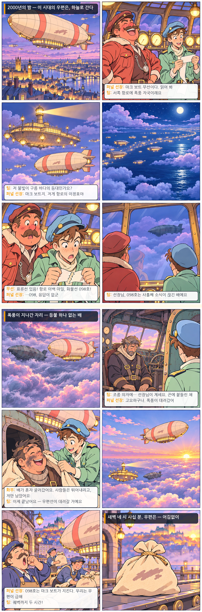
#040 · 2026-11-21
베굼 로키아 「술타나의 꿈」(Sultana's Dream, 1905)
안락의자에서 열린 문은 레이디랜드 — 구름에서 받은 물, 거울에 모은 햇살, 사라진 죄와 경찰. 눈을 뜬 손끝에는 아직, 모아 둔 햇살의 온기
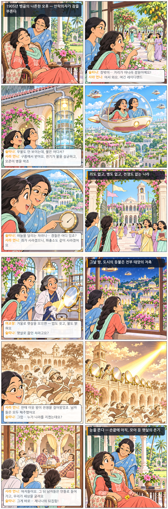
#039 · 2026-11-21
제인 C. 라우든 「미라, 혹은 22세기 이야기」(The Mummy!, 1827)
사천 년의 잠에서 깨어난 파라오가 본 2126년 런던 — 하늘은 열기구, 거리는 증기 인형 의사. 왕이 남긴 한마디, "기계는 많은데 지혜는 적군" — 그리고 열일곱 소녀가 미래를 먼저 적어 두었다
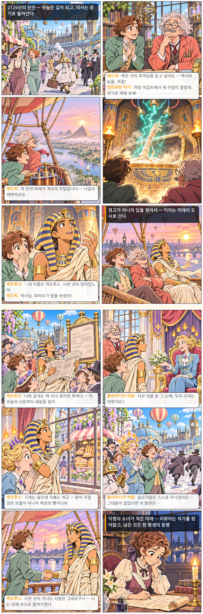
#038 · 2026-11-21
루키아노스 「진실한 이야기」(Vera Historia, 2세기)
소만 한 벼룩 기병과 메뚜기 궁수가 지키는 달의 궁전, 별들의 전쟁, 고래 뱃속의 모닥불 마을 — 1800년 전에 적어 둔 이야기의 진실은 단 하나, 모두가 거짓이라는 것
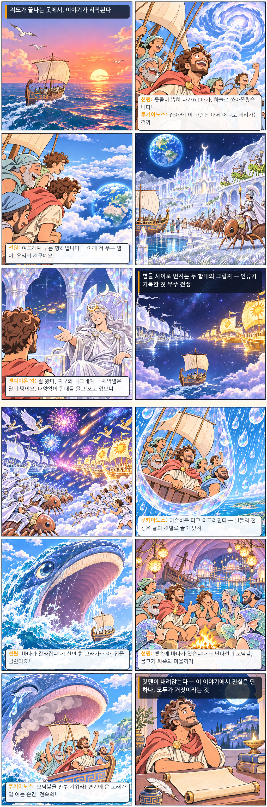
#037 · 2026-11-21
마거릿 캐버디시 「불타는 세계」(The Blazing World, 1666)
납치선이 폭풍의 문을 지나자, 금빛 곰병사들이 길을 열어 주었다 — 수정 궁의 여제가 된 아가씨와, 두 세계를 받아 적은 공작 부인의 깃펜
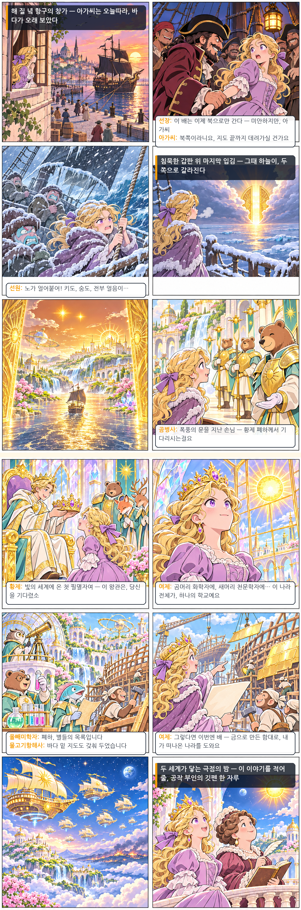
#036 · 2026-11-21
에드거 앨런 포 「한스 팔의 이례적인 모험」(Hans Pfaall, 1835)
빚에 몰린 남자가 고른 길은 위였다 — 다섯 해 뒤 광장에 떨어진 것은, 달에서 온 두루마리 한 장
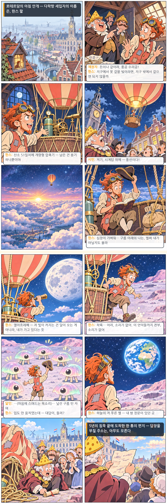
#035 · 2026-11-21
요하네스 케플러 「소므니움」(Somnium, 1634)
달그림자가 닿는 동안만 열리는 길 — 레바니아의 하루가 지나고 돌아온 새벽, 이마의 식은땀과 창밖의 저 달
#034 · 2026-11-21
조너선 스위프트 「걸리버 여행기」(Gulliver's Travels, 1726)
소인국의 밧줄, 거인 나라의 손바닥, 하늘에 뜬 섬의 그늘 — 런던의 아침 창밖에도, 아직 다른 세계의 지도
#033 · 2026-11-21
시라노 드 베르주라크 「달 세계 여행기」(L'Autre Monde, 1657)
웃음이 죄가 되는 나라를 다녀온 남자 — 아무도 안 믿어 줘서, 달은 아직도 저기에
#032 · 2026-11-21
볼테르 「미크로메가스」(Micromégas, 1752)
시리우스 거인이 남기고 간 손톱만 한 책 한 권 — 인간의 눈에는 새하얀 백지일 뿐, 그 안의 결론은 아직도 읽히지 않는다
#031 · 2026-11-20
Francis Stevens 「케르베로스의 머리들」(The Heads of Cerberus, 1919)
2118년 시민들의 목에는 번호가 걸려 있었다 — "그 번호는 여러분의 이름이 아니에요" 한마디가 도시의 목걸이를 전부 벗겼고, 돌아온 골목엔 잡화점 대신 낡은 벽돌벽, 손안엔 별처럼 빛나는 가루 몇 알
#030 · 2026-11-20
H.G. 웰스 「모로 박사의 섬」(The Island of Doctor Moreau, 1896)
사람과 짐승 사이에 세워진 것은 울타리가 아니라 '법' — 주인 없는 섬에서 그들은 하나씩 네 발로 돌아가고, 배를 저어 나온 남자는 런던의 모자 아래서도 그 눈동자들을 본다
#029 · 2026-11-20
아서 코난 도일 「잃어버린 세계」(The Lost World, 1912)
상자에서 뛰쳐나온 익룡은 강당 창밖 하늘로 사라졌다 — 텅 빈 상자 하나, 증거는 다시 그 하늘에 있다
#028 · 2026-11-20
H.G. 웰스 「투명 인간」(The Invisible Man, 1897)
붕대를 벗자 남은 것은 아무것도 아니었다 — 진흙에 잠깐 드러난 젊은 그 얼굴이, 그의 처음이자 마지막 모습
#027 · 2026-11-20
로버트 루이스 스티븐슨 「지킬 박사와 하이드」(Strange Case of Dr Jekyll and Mr Hyde, 1886)
약 한 모금에 낮의 신사가 잠들고, 밤의 신사가 깬다 — 실험실 바닥에는 빈 약병 하나, 그 안에 두 인생이 남아 있다
#026 · 2026-11-20
에드윈 A. 애벗 「플랫랜드」(Flatland, 1884)
두께 제로의 나라가 감춘 방향은 단 하나, '위' — 감옥 창으로 스며든 빛줄기 아래, 정사각형은 아직도 그 차원을 세어 본다
#025 · 2026-11-20
쥘 베른 「지구 중심 여행」(Voyage au centre de la Terre, 1864)
내려간 문은 화산이었고, 올라온 하늘은 이탈리아였다 — 뗏목 한 척으로 지구를 가로지른 세 사람, 그 심장의 불은 아직도 우리 발밑에서 타고 있다
#024 · 2026-11-20
메리 셸리 「프랑켄슈타인」(Frankenstein, 1818)
눈을 뜬 첫 밤, 가장 먼저 도망친 것은 창조주였다 — 이름 없이 태어난 거인은 오늘도 실험실 창가의 불빛 속에 남겨져 있다
#023 · 2026-11-20
E.T.A. 호프만 「모래 사나이」(Der Sandmann, 1816)
쏟아진 것은 눈물이 아니라 톱니바퀴였다 — 시계탑 위에서 그는 웃으며 외쳤다, "빙글빙글 돌아라, 나무인형들아!"
#022 · 2026-11-20
쥘 베른 「지구에서 달까지」(De la Terre à la Lune, 1865)
포탄은 달에 닿지 않았다 — 달의 인력에 붙잡힌 새 위성이 되어, 세 사람과 개 다이애나를 태운 채 아직도 그 하늘을 돌고 있을지 모른다
#021 · 2026-11-19
H.G. 웰스 「수정 알」(The Crystal Egg, 1897)
케이브는 수정을 끌어안은 채 미소 지은 얼굴로 발견되었다 — 지금도 수정 반대편에서, 누군가 이쪽을 들여다보고 있을지 모른다
#020 · 2026-11-19
H.G. 웰스 「우주 전쟁」(The War of the Worlds, 1898)
거인들을 무너뜨린 것은 대포가 아니었다 — 이 별의 가장 작은 것들, 세균이었다. 새들은 죽은 거인 위를 날아다닌다
#019 · 2026-11-19
G. 페이턴 워튼베이커 「원자에서 온 남자」(The Man from the Atom, 1923)
우주가 빛 알갱이 하나가 되었을 때 그는 깨달았다 — 되돌릴 상자는 저 속, 아직 손을 내밀고 있는 교수님 곁에 있다
#018 · 2026-11-19
에드거 라이스 버로스 「화성의 공주」(A Princess of Mars, 1912)
죽음이 나를 다시 바르숨으로 데려가 주기를 — 몸은 애리조나 동굴에 둔 채, 나는 오늘 밤도 붉은 별을 바라본다
#017 · 2026-11-19
H.G. 웰스 「타임 머신」(The Time Machine, 1895)
하얀 꽃 두 송이를 남기고 그는 다시 떠났다 — 서기 802,701년의 위나를 찾아, 3년째 돌아오지 않았다
#016 · 2026-11-19
몰간 로버트슨 「타이탄호의 침몰」(The Wreck of the Titan, 1898)
'침몰 불가능'이라던 최대 여객선 타이탄의 4월 — 소설은 14년 뒤 '타이타닉'이 될 그 밤을 미리 적어 두었다
#015 · 2026-11-19
아서 코난 도일 「독의 벨트」(The Poison Belt, 1913)
온 세상이 잠든 동안, 산소실의 네 사람만 깨어 있었다 — 세상은 하품하며 깨어났고, 아무도 기억하지 못했다
#014 · 2026-11-19
마크 트웨인 「아서 왕궁의 코네티컷 양키」(A Connecticut Yankee in King Arthur's Court, 1889)
장작더미 위에서 해를 지우겠다 선언한 남자 — 일식이 지나가자, 캐멀롯은 그를 왕 다음가는 '보스'로 맞았다
#013 · 2026-11-19
H.G. 웰스 「눈먼 자들의 나라」(The Country of the Blind, 1904)
혼인 조건은 그의 눈을 도려내는 것이었다 — 수술 전날 밤, 그는 사랑을 두고 눈 덮인 고개를 오르기 시작했다
#012 · 2026-11-19
쥘 베른 「해저 2만 리」(1870)
노틸러스호를 덮친 대왕오징어 떼 — 프랑스어로 도움을 청한 사원을 구하지 못한 네모 선장은, 그날 밤 가족 초상 앞에서 소리 없이 울었다
#011 · 2026-11-19
A. 머릿 「달의 웅덩이」(The Moon Pool, 1918)
보름달이 천장 구멍으로 내려꽂히는 밤, 빛의 존재가 솟았다 — 아내는 "저 빛은 따뜻해요"라며 물속으로 사라졌다
#010 · 2026-11-19
레이 커밍스 「황금 원자 속의 소녀」(1919)
금 원자 하나에 도시가 있었다 — 닿을 수 없는 그녀를 찾아, 그는 오늘도 셀 수 없는 금 티끌을 하나씩 뒤진다
#009 · 2026-11-18
잭 런던 「그림자와 섬광」(1903)
보이지 않는 두 천재의 마지막 결투 — 해가 뜨자 모래 위에는 그림자 하나, 빛의 반짝임 하나만 남았다
#008 · 2026-11-18
머리 레인스터 「도망치는 마천루」(1919)
건물은 공간이 아니라 시간을 거슬러 내려앉았다 — 돌아온 곳은 떠난 바로 그 순간, 거리는 아무 일 없이 흐르고 있었다
#007 · 2026-11-18
W.H. 호지슨 「밤의 목소리」(1907)
안개 저편에서 들려온 목소리 — 빵 한 자루를 안고 노를 저어 돌아간 남자, 그의 얼굴을 본 사람은 아무도 없었다
#006 · 2026-11-18
아서 코난 도일 「고공의 공포」(1913)
구름 위에는 정글이 있었다 — 찢어진 일기장의 뒷장은 끝내 발견되지 않았다
#005 · 2026-11-18
에드거 앨런 포 「발데마르 씨의 사건」(1845)
죽음과 최면 사이 일곱 달 — "죽어 있다"고 말한 것은 발데마르 본인이었다
#004 · 2026-11-18
앰브로스 비어스 「목슨의 마스터」(1899)
체크메이트를 선언한 것은 기계였고, 다음 날 아침 "흠" 하고 목을 가다듬은 것은 일꾼이었다 — 그 목소리는 똑같았다